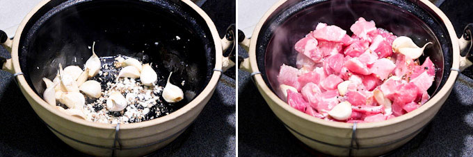
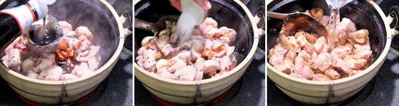
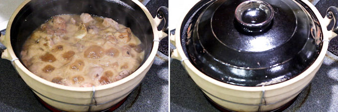
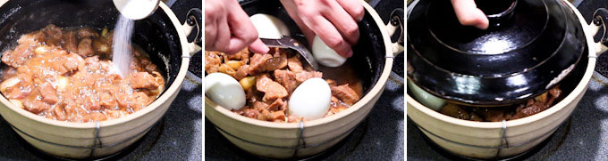

Chinese Braised Pork

Ingredients
- 2 tbsp vegetable oil
- 1 bulb garlic (separated but not peeled)
- 1 tsp peppercorns (cracked or smashed)
- 2 cloves garlic (minced)
- 1½ lbs boneless pork ribs or pork shoulder, cut into bite size pieces (675g)
- 3 tbsp sweet soy sauce
- 2 tsp sugar
- ¾ cup water (180ml)
- ½ tsp salt (or to taste)
- 4 hard boiled eggs (peeled)
Instructions
- Heat vegetable oil in a medium sized pot. Saute garlic cloves, cracked peppercorns, and minced garlic for 1 minute.
- Add pork and fry to seal in the juices. This should take about 3 minutes.

- Add sweet soy sauce, sugar, and water.

- Bring liquid to a boil. Reduce heat to low and simmer for 20 minutes.

- Add salt and hard boiled eggs. Cover and simmer for another 15 minutes.

- Turn eggs occasional to coat evenly with soy sauce. Turn off stove.
- Serve warm with steamed rice.